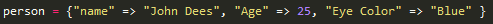
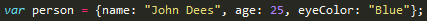

For the past few weeks we have been using Ruby. This week, however, we are starting to learn JavaScript. I am going to compare and contrast both Objects in JavaScript and Hashes in Ruby. Lets first see how they are similar.
First off both hashes and objects store information. They also store two pairs of information; hashes use key and value, objects use property name and value. They also are created similarly, both hash and object need a variable name and their data are inside curly brackets {}.

That is an example of a hash in Ruby.

And that was an example of an object in JavaScript. Do you see the similarities?
Now lets go over some of the differences. First off you notice some of the differences in syntax. In JavaScript we have to declare our variables using var, we don't need this in Ruby. We also can see that in Ruby we need to use => to pair a key to its value, where in JavaScript we use a colon :. We also access the values differently. In Ruby, we would use person["name"] to return the value of the key "name". In JavaScript, we would use person.name to return the value of the name property. Another big difference is that objects in JavaScript can also contain methods or functions. I don't know if Ruby's hashes can do this. This is very powerful because you can create a singular objects that contains methods that everything will share, then create instances of that object and change specific properties of that instance. For example you could create an object called car. In that object you can have methods like start, turn left, turn right, brake, and off. Then you can create an instance of that object called mustang. That object would have all the methods that car had, and then you can add properties to the mustang like color, model, year, etc.